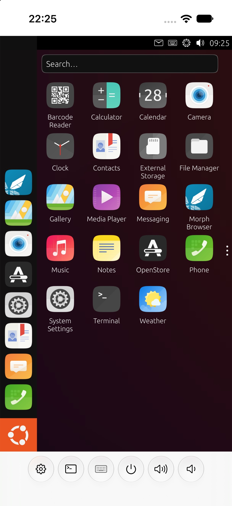
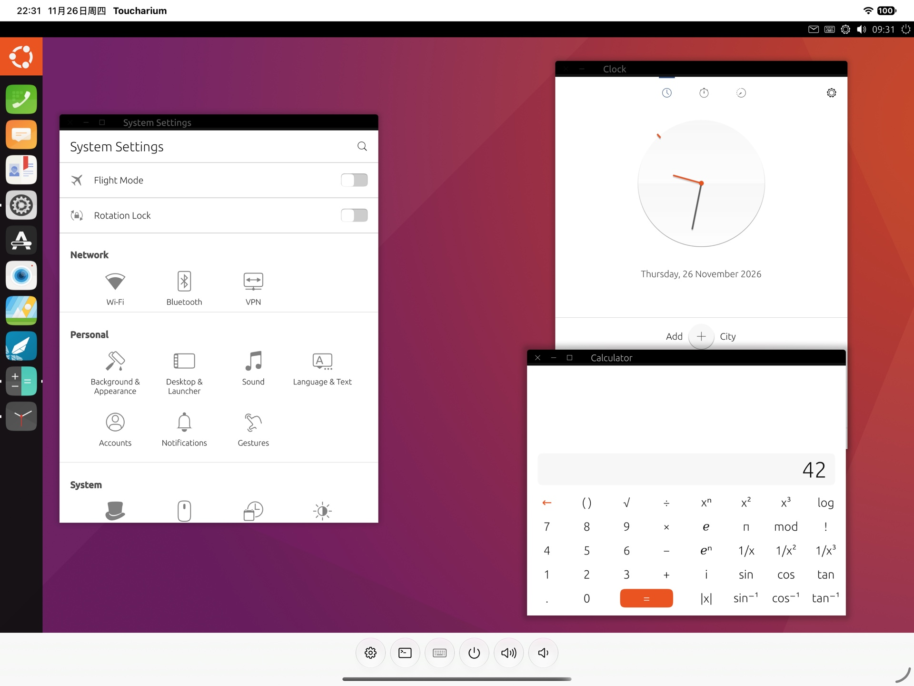

熟悉的触控，全新的系统A familiar touch. A different system.
以竖屏探索 Lomiri 界面，使用桌面边缘手势，在同一台设备上体验 Ubuntu Touch。Explore Lomiri in portrait, use its edge gestures, and experience Ubuntu Touch on the device you already have.
在 iPhone 和 iPad 上，体验和学习 Ubuntu Touch。
自行准备兼容镜像，在本地运行，
开启属于你的学习与探索空间。Experience and learn about Ubuntu Touch
on iPhone and iPad. Prepare a compatible image
and explore it locally on your own device.
等待 Ubuntu 官方答复后，再考虑上架安排。目前暂不提供 App Store 下载入口。The App Store download link is on hold while we await a response from Ubuntu’s representatives. We will reconsider release arrangements after their reply.

一套系统，不止一种体验ONE SYSTEM. MORE POSSIBILITIES.
Toucharium 将 Linux 客体系统带入 iOS App，
让探索从指尖开始。Toucharium brings a Linux guest system into an iOS app.
Start exploring, one touch at a time.
以竖屏探索 Lomiri 界面，使用桌面边缘手势，在同一台设备上体验 Ubuntu Touch。Explore Lomiri in portrait, use its edge gestures, and experience Ubuntu Touch on the device you already have.
保留客体系统中的文件和设置，选择 iPhone 键盘或 Ubuntu Touch 键盘。切换输入法后重新打开 App 生效。Keep guest files and settings. Choose the iPhone keyboard or the Ubuntu Touch keyboard; reopen the app to apply a change.
查看应用、运行时改动、内核配置与镜像派生工具的源码，了解它如何运行。Read the application, runtime changes, kernel configuration and image tools to understand how it works.
V2 / SIMULATOR CAPTURES
iPhone 的手机界面，与 iPad 的桌面窗口模式。以下为开发版模拟器实拍；可点开查看大图，不代表真机性能。A phone interface on iPhone and desktop windows on iPad. These are actual development-build simulator captures. Open either image for a closer look; they do not indicate physical-device performance.
竖屏浏览应用，边缘手势唤出启动器，宿主按钮留在系统画面之外。Browse applications in portrait, reveal the launcher with edge gestures, and keep host controls outside the guest display.

系统设置、时钟和计算器同时运行。应用有自己的标题栏和窗口按钮，可拖动位置安排桌面。System Settings, Clock and Calculator running together. Each app has its own title bar and window controls; drag windows into position to arrange your desktop.
一起把体验做得更好LET’S MAKE IT BETTER
查看使用帮助，或者直接联系开发者。Read the guide or get in touch with the developer.